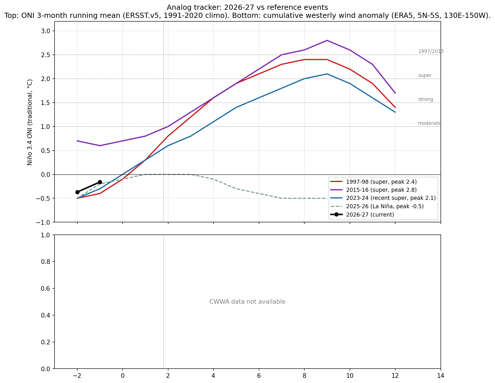

How likely is a super
El Niño this winter?
Updated each Monday from the four major ENSO outlooks (NOAA CPC, IRI, BoM, ECMWF SEAS5) and weekly Niño 3.4 observations. Peak season target: DJF 2026-27. Forecast disagreements are surfaced rather than averaged.
Bottom line: 92% chance of at least a moderate El Niño this winter, 25% chance of a 1997 / 2015-magnitude event.
Probabilities are CPC-derived after RONI→trad-ONI translation (live offset +0.50°C, week of 2026-04-22) and a skew-normal fit on CPC's nine-bin strength table. ECMWF SEAS5 ensemble counts are a second cross-check.
Analog tracker
2026-27 trajectory vs reference El Niño events, plus the SEAS5 ensemble forecast (median + uncertainty bands) forward.

Physical state
Current observations vs the same calendar week in past super-event develop years.
| Indicator | Current week of 2026-04-25 | 1997 same week | 2015 same week |
|---|---|---|---|
| Niño 3.4 weekly (traditional) | +0.7°C | −0.1°C | +0.6°C |
| Niño 3.4 weekly (RONI) | +0.2°C | n/a (pre-RONI) | n/a (pre-RONI) |
| 0–300 m heat content anomaly | +1.36°C | +0.7°C | +1.6°C |
| Cumulative westerly wind anomaly since Mar 1 CWWA, ERA5 5°N–5°S, 130°E–150°W, m/s·days | n/a | n/a | n/a |
Impact outlook
Aggregation of institutional impact ranges for the developing event. Probabilities below are from named external sources, conditional on the headline strong-to-super case in section 1 materializing.
Regional probabilities and named tail events
- Mediterranean (Spain, Portugal, Italy, Greece, southern France). Probability of severe summer 2026 heat and drought: high, >70% Iberia, ~65% Italy/Greece/southern France. The 2024 July Mediterranean heatwave was characterized by World Weather Attribution as "virtually impossible without human-caused climate change". A 2003-magnitude European heat event (~70,000 excess deaths) is rated medium probability (~25-30%) on a strong El Niño compounded with the multi-year Mediterranean drought baseline.
- Amazon basin. Probability of major drought 2026: high (>70%); probability of fire season exceeding 2024 hotspot levels: medium-high (~50%). NASA SERVIR characterized the 2023-24 drought magnitude as "roughly double" the 2015-16 event. The 2024 fire season produced a 76% increase in hotspots vs 2023.
- Australia and the Great Barrier Reef. Probability of severe bushfire season austral summer 2026-27: high (>65%); GBR mass bleaching: very high (>85%); agricultural drought: high (>70%). The reef has bleached six times since 2016; another super event makes a sixth-in-eight-years bleaching baseline. Australian winter wheat is the cleanest El Niño short on record, with declines of 16% to 46% under prior strong events (1965, 1977, 1982, 1994, 1997, 2023).
- Southern Africa. Probability of major drought repeat: ~70% if rains arrive late, per OCHA framing of the 2023-24 baseline ("worst impacts in 40 years"). Probability of a humanitarian appeal exceeding $5 billion: medium-high (~50%). Six SADC countries declared emergency in 2024; back-to-back is the asymmetric humanitarian risk.
- India and South Asia. IMD's April 2026 monsoon outlook is 92% of the long-period average, the first below-normal April call since 2015. Of 16 historical El Niño years since 1950, 7 produced below-normal Indian monsoons (IMD MMCFS). Pre-monsoon heat already reached 43.8°C at Akola in mid-April 2026.
- United States. California atmospheric river season: above-normal Pacific storm count winter 2026-27 high (~70%), with ~50% probability of a major atmospheric river damage event January-March 2027. Pacific Northwest: warmer-drier winter (~70%) with significant 2026 fire season (~50%). Atlantic hurricane season: high probability (~70%) of below-normal activity from El Niño wind shear, partially offset by warm Atlantic SSTs (2023 produced 20 named storms despite an El Niño base state). Southern Plains drought relief: low-medium (~25-30%); the 2023-24 super event underdelivered there.
- Southeast Asia. Significant drought in Indonesia: high (>70%); palm oil production decline: medium-high (~55%). The 2015-16 super event delivered a 13.2% Malaysian palm oil production decline at a 12-month lag. Vietnamese coffee output fell 20% in 2023-24.
- Global coral. The 2023-25 fourth global bleaching event already affects ~84% of world reefs (International Coral Reef Initiative, April 2025). Continued mass bleaching across all tropical basins is essentially certain into 2026-27.
Macro and cross-cutting
The Cashin, Mohaddes and Raissi (IMF 2017) framework is the academic anchor: a one-standard-deviation El Niño lifts non-fuel commodities about 5.5%, raises oil, and adds 0.1 to 1.0 percentage points to CPI in food-heavy economies, with GDP drags on Australia, Indonesia, India, Chile, and South Africa. Allianz cut 2026 global GDP by 0.5 percentage points to 2.6%. The IMF's April 2026 WEO put 2026 growth at 3.1% and headline inflation at 4.4%. Swiss Re's 2026 baseline insured NatCat losses are $148 billion, with a $320 billion El Niño-fueled hurricane tail scenario.
Editorial synthesis: joint Iran + El Niño shocks
Editorial label. This subsection is the brief's one explicit synthesis. It names a transmission chain that no single agency or institutional source assembles end to end. Read it as an analyst hypothesis, not a pooled probability.
The Hormuz blockade and the developing super El Niño are not independent. They share three transmission lines.
Fertilizer. The Middle East routes roughly 50% of seaborne sulfur trade and is the largest regional exporter of urea and ammonia (IFA, IFPRI). The Hormuz disruption doubled sulfur costs (Exiger, March 2026) and was followed by China's April 10 sulfuric acid export ban (StoneX, Fertilizer Daily). El Niño-stressed crops require more fertilizer, not less, to hold yield under drought or excess-moisture conditions. The compounded shock at the spring planting decision is what compresses 2026-27 yields beyond what either shock would do alone. Egypt FOB granular urea has gone from $400 to $700 per ton in six weeks (CNBC); only 60% of US farmers had nitrogen secured for the 2026 crop at the latest NCGA survey (AgWeb).
Twin-deficit Asia. The Philippines (national energy emergency March 24), Pakistan, Egypt, and Bangladesh face simultaneous oil-import shock and El Niño-driven domestic food shortfall. The Cashin et al elasticity layered on a Hormuz oil shock compounds into the stagflationary import bills the IMF flagged in its April 2026 WEO.
Insurance and reinsurance capacity. Marine war-risk premiums rose roughly 60-fold within 48 hours of the February 28 strikes (Lloyd's Market Association). A super El Niño Atlantic landfall combined with an active Hormuz war-risk catastrophe layer would compress global reinsurance capacity at the same renewal cycle, on top of the Swiss Re NatCat figures cited above. This is the asymmetric capital-stress channel that justifies labeling the synthesis.
The brief does not assign a probability to the joint scenario. Component probabilities sit in section 1 (super El Niño) and the public Hormuz risk literature (Allianz, Goldman, IMF, IEA) for the geopolitical leg. The synthesis claim is narrower and harder to dismiss: the two shocks compound rather than substitute, and the compound has not been priced as a single risk.
Source-by-source check
What each agency said this week, verbatim where useful.
- NOAA CPC strength table, NDJ 2026-27 (RONI)issued 2026-04-09super 25%, strong 26%, moderate 26%, weak El Niño 15%, neutral 8%, La Niña 0%.
- IRI plume, DJF 2026-27issued 2026-04-20El Niño 88%, neutral 11%, La Niña 1%. Strength not broken out in the public Quick Look.
- BoM ENSO Outlookissued 2026-04-28Further warming in the tropical Pacific as models suggest El Niño by late winter. Categorical only.
- ECMWF SEAS5run 2026-04-05Median ensemble path crosses traditional Niño 3.4 +2.0°C by autumn. Roughly 50% of members exceed +2.5°C for October. Implies meaningfully higher upper-tail probabilities than the CPC RONI strength table for the NDJ peak.
Caveats this issue
- The +2.5°C bucket carries a 24–26% range. It comes from a bootstrap that perturbs CPC's published bin probabilities by Gaussian noise (sigma 1 percentage point, matching CPC's whole-percent reporting precision) and refits the skew-normal each time. The range therefore reflects reporting-quantization uncertainty in CPC's table, not underlying forecast uncertainty.
- ECMWF SEAS5 vs CPC, upper tail above +2.5°C trad ONI: SEAS5 has 0/0 members (0%) at max lead (max available lead). CPC's NDJ 2026-27 bucket lands at 24–26%. We subtract SEAS5's own model climatology, which removes its known ENSO warm bias; an observational-climatology subtraction would put SEAS5 higher still. Real disagreement to surface, not a number to average.
- Spring predictability barrier: April–May forecasts at any of these centers carry materially wider error bars than what we'll see in July–August. Treat all numbers as preliminary.